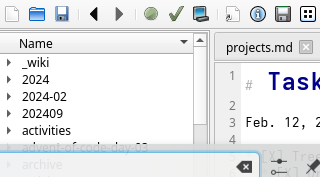

Navigation Features¶
TreeMk provides powerful navigation features to help you organize and explore your notes efficiently.
Wiki-Style Links¶
Creating Links¶
Create links between your notes using double brackets:
Following Links¶
- Ctrl+Click on a link to open the target note
- If the file doesn't exist, TreeMk will ask if you want to create it
- Links automatically adapt to your folder structure
Link Syntax Variations¶
[[simple-link]] # Links to simple-link.md
[[folder/note]] # Links to file in subfolder
[[note#section]] # Links to specific heading
[[custom text|actual-file-name]] # Display text different from filename
File Tree Navigation¶
File Explorer¶

The left panel shows your folder structure:
- Browse folders and files
- Right-click for context menu (New, Rename, Delete)
- Drag files to the editor to create links
- F5 to refresh the tree
Quick Operations¶
- F2: Rename selected file
- Delete: Delete selected file (with confirmation)
- Double-click: Open file in editor
- Right-click: Access full context menu
- Drag & Drop: Drag files from tree to editor to create
[[wiki-links]]
Clipboard Support¶
- Paste images directly into notes with Ctrl+V
- Images are auto-saved to the document folder
- Automatic filename generation with timestamps
- Markdown syntax inserted automatically
Outline Panel¶
Document Structure¶
The Outline tab shows all headings in the current document:
- Click any heading to jump to that section
- Hierarchical view of document structure
- Auto-updates as you edit
Heading Levels¶
TreeMk recognizes all Markdown heading levels:
# H1- Main document title## H2- Major sections### H3- Subsections- And so on...
Navigation History¶
Back and Forward Navigation¶
TreeMk tracks your navigation history, allowing you to move backward and forward through recently opened files—just like a web browser.
Using History Navigation¶
- Alt+Left or click the Back button: Go to previous file
- Alt+Right or click the Forward button: Go to next file
- Menu: Go → Back and Go → Forward
- Toolbar: Back and Forward buttons (arrow icons)
History Panel¶
The History tab in the left sidebar shows your complete navigation history:
- Most recent files appear at the top
- Double-click any file to jump directly to it
- History persists across sessions
- Maximum of 2048 entries (oldest are automatically removed)
How History Works¶
- Each time you open a file, it's added to your history
- Navigate back and forward without re-adding to history
- Opening a new file while in the middle of history clears forward entries
- Prevents duplicate consecutive entries for cleaner history
Use Cases¶
- Return to Context: Go back to where you were before following a link
- Compare Notes: Quickly switch between related documents
- Retrace Steps: Review your research path through multiple documents
- Resume Work: See what you were working on in previous sessions
Backlinks¶
What Are Backlinks?¶
Backlinks show all notes that link to the current document. This powerful feature helps you discover connections in your knowledge base by revealing which documents reference the one you're currently viewing.
Using Backlinks¶
- Open any note
- Switch to the Backlinks tab in the left sidebar
- See all notes that reference this one with
[[wiki-links]] - Click any backlink to open that note
- Backlinks update automatically as you create or remove links
Benefits¶
- Discover connections between notes
- Find all references to a topic
- Navigate your knowledge graph bidirectionally
- Build a networked note system
- Track how ideas are interconnected
How Backlinks Work¶
When you create a wiki-link like [[note-name]] in one document, that document will appear in the Backlinks panel of the target note. This creates a two-way connection: you can navigate forward through links you create, and backward through links others create to you.
Quick Open¶
Fast File Access¶
Press Ctrl+P (menu: Go + Quick Open) to open the Quick Open dialog:
- Start typing a filename
- Fuzzy search matches parts of names
- Arrow keys to select
- Enter to open
Fuzzy Matching¶
Type any part of the filename:
gettmatches "getting-started.md"key shomatches "keyboard-shortcuts.md"- Works with partial matches
Search in Files¶
Full-Text Search¶
Press Ctrl+Shift+F to search across all files:
- Enter search term
- See all matches with context
- Click any result to open that file
- Search is case-insensitive by default
Search Features¶
- Preview matching lines
- Jump directly to matches
- Search entire workspace
- Regular expression support
Tab Navigation¶
Multiple Tabs¶
Work with multiple notes simultaneously:
Ctrl+Tab: Next tabCtrl+Shift+Tab: Previous tabCtrl+w: Close current tabCtrl+Shift+t: Reopen closed tab
These options are also available in the main menu under option Go
Tab Management¶
- Tabs remember their position
- Session restoration on restart
- Close tabs from other folders when switching workspaces
- Drag tabs to reorder
Recent Folders¶
Workspace Switching¶
Access recently opened folders:
- File → Recent Folders menu
- Quick switching between projects
- Recently used folders at the top
- Clear history option available
Tips for Efficient Navigation¶
- Use Wiki Links: Create a web of interconnected notes
- Leverage Backlinks: Discover unexpected connections and reverse relationships
- Navigation History: Use Back/Forward to retrace your steps through documents
- History Panel: Review and jump to recently visited files
- Quick Open: Fastest way to jump between files (Ctrl+P)
- Outline Panel: Navigate long documents quickly
- Tab Groups: Keep related notes open together
- Search: Find anything across your entire workspace
Keyboard Shortcuts¶
For a complete list of navigation shortcuts, see Keyboard Shortcuts.
Next Steps¶
- Learn about Preview Features for rendering
- Explore Editor Features for editing power
- Return to User Guide for overview